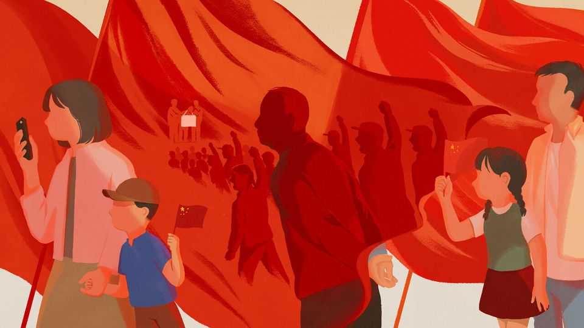

Fifty years after the Cultural Revolution, China won’t talk about it
Keeping silent about the awful decade may not bury it

Oct 8th 2026
There have been no celebrations. Yet it was a momentous anniversary. October 6th marked exactly 50 years since the official end of the Cultural Revolution. The close of that tumultuous decade, and the decisive turn from Mao’s erratic rule, paved the way for China’s half-century of remarkable growth. But the date is altogether too sensitive for the Communist Party, given its profound aversion to examining past errors. The party long ago rendered a negative verdict on the Cultural Revolution and has no interest in reopening old wounds.
In search of a sign, even just a flicker, of public remembrance, Chaguan paid a visit last month to what once stood as China’s lone exhibition of the horrors of the Cultural Revolution, in the hills outside Shantou, a southern port city. Extreme violence erupted soon after Mao’s campaign got started in Beijing in 1966 and spread like a virus around the country, including to Shantou, nearly 2,000km away. A deputy mayor, himself persecuted during those crazed years, knew there were graves in the hills and transformed the area into a museum, opening it in 2005. Drawing on private donations, he installed plaques bearing the names of thousands of victims and displayed accounts of the chaos as well as photos of wild crowds denouncing supposed enemies. He also exhibited the official verdict: a mistaken leader and counter-revolutionary cliques had “brought catastrophe to the party, the state and the whole people”.
After a long walk up a hilly road late on a humid day, Chaguan arrived at the site of the former museum. The government had shut it for “renovations” in 2016. For a while after that, visitors could still find traces of the memorials, including plaques hastily covered over. Now nothing is left. The circular pagoda-like building that had housed artefacts is empty and padlocked. Inscriptions on stones are smoothed over with concrete or blotted out with yellow paint. No graves from that era are marked. Instead the site has become a tribute to the 12 “core socialist values” that China adopted as ideological slogans as Xi Jinping rose to power. Large decorative signs tout these values (among them: justice, equality, freedom), with no elaboration.
Plain-clothes police used to monitor and often harass visitors to the site, whether they were meddling foreign correspondents or brave relatives gathering to mourn, as they did each summer. Now, so thoroughly has the memorial been erased that Chaguan had no problem walking around. An old man near the former museum was stretching after hiking up the hill. “People my age know exactly what happened. We lived through it. There was violence between different factions here in Shantou,” he said. “Younger people don’t know and leaders don’t want them to know.”
Covering up history is nothing new in China: look at the party’s efforts to erase memories of the Tiananmen Square protests of 1989. But the silence around the Cultural Revolution is becoming ever more deafening. In the late 1970s Deng Xiaoping let people reflect on their personal trauma, giving rise to “scar literature”. Soon, though, Deng tried to draw a line under all this with the party’s resolution on history in 1981. Even so, throughout Deng’s era and beyond, people continued to revisit their own experiences and discuss the national tragedy—in plucky journals, books, films and, as in Shantou, in memorials. These efforts encountered resistance, but there were enough cracks for them to squeak through.
Over the past 15 years, the party has steadily sealed most of these apertures. The journals have been closed. Some books previously published by official Chinese presses have been banned. The most provocative film-makers live under constant surveillance. In July a researcher using a pseudonym wrote a piece for China Unofficial Archives, an overseas website, arguing that control over information related to the Cultural Revolution “has reached unprecedented levels in 2026”. At universities some historians still touch on the decade in their lectures, but no one dares question that terse and superficial official verdict.
The silence cuts across ideologies. In 2016, the 50th anniversary of the Cultural Revolution’s start, a few voices across the political spectrum argued about it, online and in print. Liberals wanted a fuller reckoning, to ensure the madness was never repeated; leftists called for a reappraisal crediting Mao for shaking up an ossified party. On this anniversary neither criticism nor admiration is acceptable. The party overwrote its 1981 resolution on history with a new one in 2021, reducing its analysis of the Cultural Revolution from a chapter to a slim paragraph. If Deng wanted to shelve the debate, Mr Xi has tried to shove it deep in the cupboard.
For Mr Xi, the quiet is a victory. He seems to have crushed the “historical nihilism” that he warned about early in his tenure—namely, excessive criticism of Mao’s rule that ultimately undermines the party’s legitimacy today. Yet there is an irony. Events that concluded 50 years ago tend to lose force in domestic politics when debated in full and in the open; think of the Vietnam war’s fading legacy in America. When countries avoid such debates, rage over past atrocities can burst forth again, much as Franco’s dictatorship has returned as a political flashpoint in Spain.
In China the generation that served as Red Guards is dying off. Had the Cultural Revolution been examined in greater detail, it might have come to look like a curious monstrosity—terrible but distant—to their grandchildren coming of age. Instead keeping it shrouded grants it a latent power. Debate about it could one day resurface, providing critics of the regime with fodder for attacks that reach beyond Mao’s excesses to the whole political system. This is why the Cultural Revolution haunts not just its dwindling number of living victims, but the party itself. ■